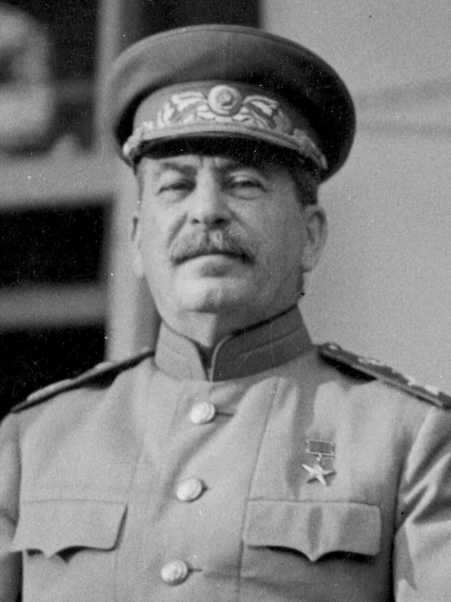

Personajes Clave de la Segunda Guerra Mundial
A continuación, se presenta información sobre algunos de los personajes más influyentes que jugaron roles cruciales durante la Segunda Guerra Mundial:
Aliados
-

Winston Churchill
Sir Winston Leonard Spencer Churchill (1874-1965) fue un estadista, escritor, orador y primer ministro británico durante la Segunda Guerra Mundial. Su liderazgo firme y sus inspiradores discursos fueron fundamentales para mantener la moral británica y la resistencia contra la Alemania nazi, especialmente durante la Batalla de Inglaterra. Churchill forjó importantes alianzas con Estados Unidos y la Unión Soviética para derrotar al Eje.
-

Franklin Delano Roosevelt
Franklin Delano Roosevelt (1882-1945) fue el 32º presidente de los Estados Unidos, sirviendo durante la mayor parte de la Segunda Guerra Mundial hasta su muerte poco antes del final del conflicto en Europa. Su liderazgo fue crucial para la movilización de la economía y la sociedad estadounidense para el esfuerzo bélico. Roosevelt fue un arquitecto clave de la alianza aliada y jugó un papel fundamental en la planificación del orden de posguerra.
-

Joseph Stalin
Iósif Vissariónovich Dzhugashvili, conocido como Joseph Stalin (1878-1953), fue el líder de la Unión Soviética desde mediados de la década de 1920 hasta su muerte. Su liderazgo autocrático y su control férreo sobre el Partido Comunista y el estado soviético fueron decisivos en la resistencia de la Unión Soviética contra la invasión alemana en el Frente Oriental, que resultó ser el teatro de guerra más sangriento y determinante del conflicto.
Potencias del Eje
-

Adolf Hitler
Adolf Hitler (1889-1945) fue el dictador de Alemania y líder del Partido Nazi. Su ideología racista y nacionalista extrema, su política expansionista y su papel central en el desencadenamiento de la Segunda Guerra Mundial lo convierten en una figura central del conflicto. Hitler fue el principal instigador del Holocausto, el genocidio sistemático de millones de judíos y otros grupos minoritarios.
-
Benito Mussolini
Benito Amilcare Andrea Mussolini (1883-1945) fue el dictador fascista de Italia desde 1925 hasta 1943. Líder del Partido Nacional Fascista, estableció un régimen totalitario y expansionista en Italia, aliándose con la Alemania nazi en la Segunda Guerra Mundial. Su ambición de restaurar la grandeza del Imperio Romano lo llevó a involucrar a Italia en el conflicto.
-
.jpg)
Emperador Hirohito
El emperador Shōwa, conocido póstumamente como Emperador Hirohito (1901-1989), fue el emperador de Japón durante la Segunda Guerra Mundial. Aunque el poder político real residía en el gabinete militar, Hirohito fue una figura simbólica importante y su aprobación fue necesaria para las principales decisiones de guerra. Su papel exacto en la toma de decisiones durante la guerra sigue siendo objeto de debate histórico.